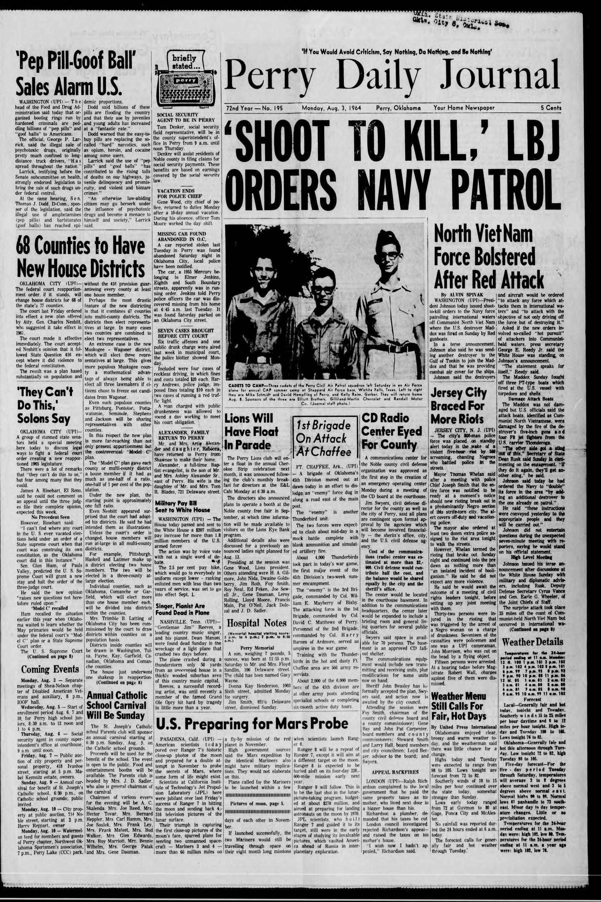
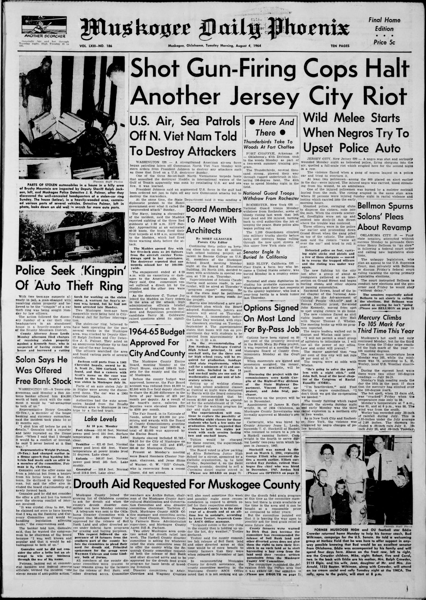

HN HN-648 · August 4, 1964 · War, Conflict & Security > Wars, Battles & Campaigns > Naval battles
Gulf of Tonkin 2 August 1964 USS Maddox engagement is distinct from disputed 4 August claimed second attack.
Class: Competing accounts (P)
Recorded difference/concern: Gulf of Tonkin 2 August 1964 USS Maddox engagement is distinct from disputed 4 August claimed second attack.
Assessment: Do not treat the later disputed encounter as established by reporting on the first.
Source links: https://gateway.okhistory.org/ark:/67531/metadc2245705/m1/1/ocr/ https://gateway.okhistory.org/ark:/67531/metadc2557398/m1/1/ https://files.eric.ed.gov/fulltext/ED337409.pdf
Authentic scans retrieved from Gateway to Oklahoma History (Oklahoma Historical Society). Article crops are located using the archive's own OCR word coordinates and rendered at native crop resolution; page scans are reduced-size access renditions. No images were generated, mocked, or retouched.


Not yet acquired. Queued for provider-specific acquisition testing (see source-acquisition manifest).
URL (preserved verbatim): https://newspapers.library.in.gov/?a=d&d=DCDD19640804.1.1
Saved research report: Historical_Newspaper_Event_Research_628-652_2026-10-23.md
Evidence note: A newspaper report means a historical publication made a claim; it does not establish that claim as fact. Contemporary reporting is separated from later scholarly context and our own assessment.